Home / Docs / Episode 2 · THE GUEST-GIFT
Production notes
Episode 2 · THE GUEST-GIFT
The Cyclops again, as a flashback at the Phaeacian feast, told by two tellers who remember it differently. The experiment: the recollection-image. Watch the film.
Production notes · THE FOUND ODYSSEY · Episode 2 · THE GUEST-GIFT
The whole of Book 9 (the Cyclops), told as a flashback at the Phaeacian feast, by two tellers who disagree.
The experiment
Here it is in order. Click a frame and the film plays from there.
Each episode tests one family of CINEOSIS signs. This one tests the recollection-image: the flashback, and what happens when two people remember the same events differently. Each act card is a CINEOSIS tile with the sign's number, symbol and name.
- Part
- Cold open, the feast
- What it does
- Odysseus stands on Alcinous's banquet table and finally gives his real name. The archive answers with other people's names: "My name is Jacob Hedinger", "I am Simon Borgen", "And so it goes." He points at us and the projector rolls.

- Part
- I · as Odysseus tells it
- Sign
- Sd 28, Strong destiny
- What it does
- His version is a pot. The film is graded to black-figure on clay inside a gold meander border, and he and his crew are drawn black-figure. The act ends when a full-colour hand comes in from outside the pot, grips the border and pulls it open.

- Part
- II · as Polyphemus tells it
- Sign
- Pf 40, Powers of the false
- What it does
- His version is the film itself, in colour, inside a rope of wool. He is a careful shepherd who carries wood, milks, laughs at a lamb and lights the fire. In his version the guests are small thieves behind his cheeses. When he eats the two men, they disappear behind his back and a napkin appears.
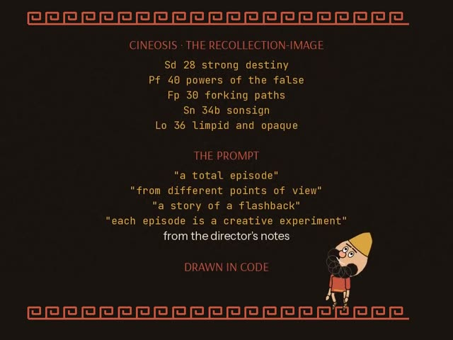
8:04 the start of this part, just after its card
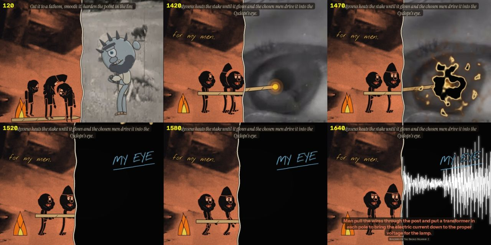
scene test The scene rendered on its own before the episode was assembled, to check staging, scale and the line.- Part
- III · both at once
- Sign
- Fp 30, Forking paths
- What it does
- A split screen: his pot on the left, his film on the right. The seam moves toward whichever teller is speaking. Anything that crosses the seam changes style as it crosses: the wine cup first, then the hot stake. When the stake reaches the eye (The Eyes and Their Care, 1941), his half of the film burns through.

- Part
- IV · in the dark
- Sign
- Sn 34b, Sonsign
- What it does
- His half is now black, and his voice appears only as a trace of light. The neighbours come to the door, hear "Nobody", shrug and leave. At dawn he knows his flock only by touch, so each ram is drawn in white scratch lines only where his hands touch it.
- Part
- V · the name
- Sign
- Lo 36, Limpid and opaque
- What it does
- A rock flies out of the dark and lands in the pot. Then Odysseus says his name, and the two halves swap: the seam slides away, and Polyphemus's film comes back in colour while the ship shrinks to a black-figure speck. He speaks the curse.
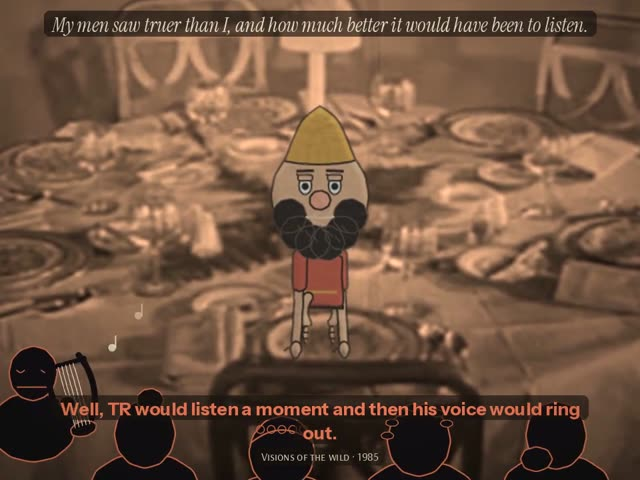
7:26 “the fairest thing”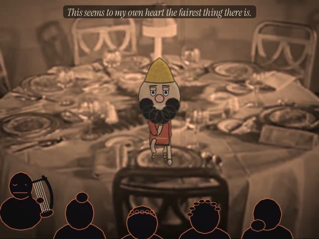
7:32 “Well, I don't think they'd be any fair.”
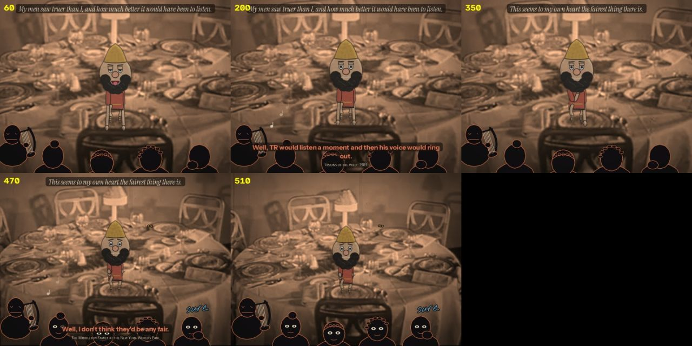
scene test The scene rendered on its own before the episode was assembled, to check staging, scale and the line.- Part
- Back at the feast
- What it does
- The story was the guest-gift. The archive's last word on "the fairest thing" is "Well, I don't think they'd be any fair."
- Part
- After the credits
- What it does
- Still in the dark, his hands feel along the cave mouth and find what the archive calls "a most curious animal, the ant eater."

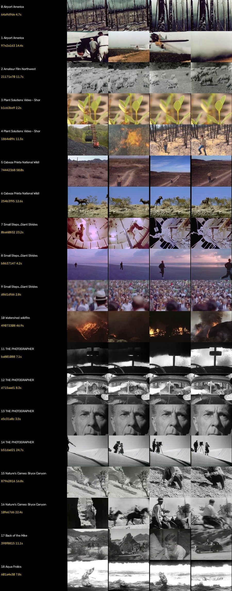
check frame Contact sheet 1
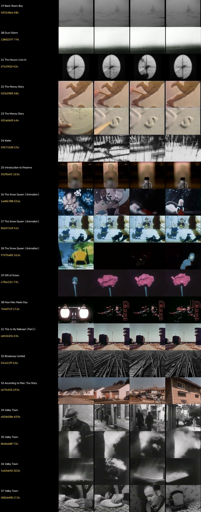
check frame Contact sheet 2
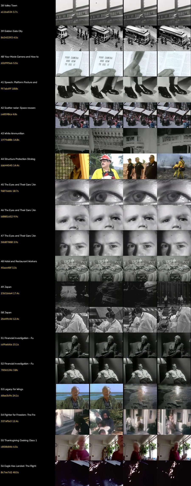
check frame Contact sheet 3
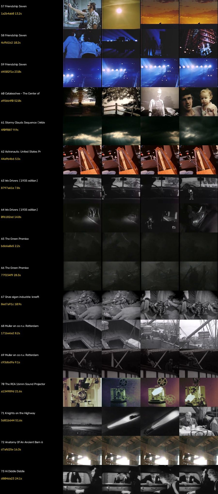
check frame Contact sheet 4
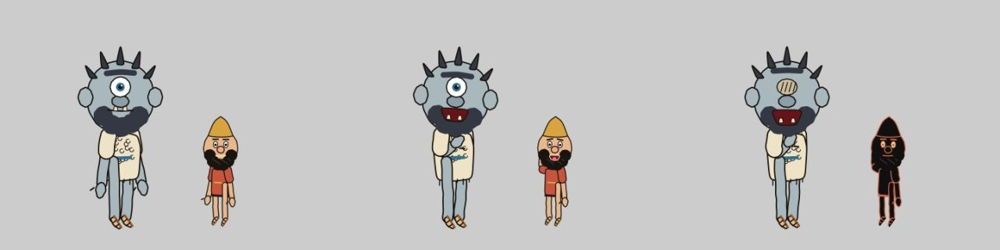
costume test Polyphemus test
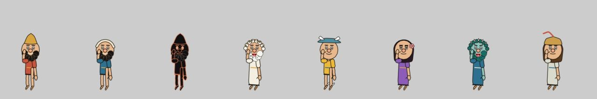
costume test One body, many costumes: the first gods
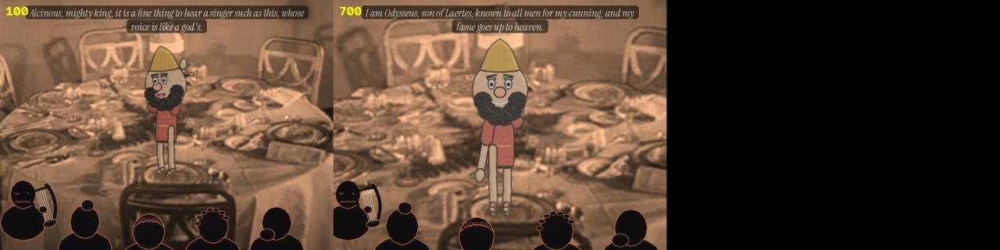
scene test Scene test, hall
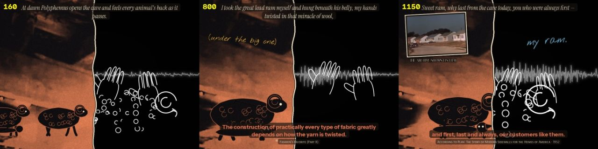
scene test Scene test, rams
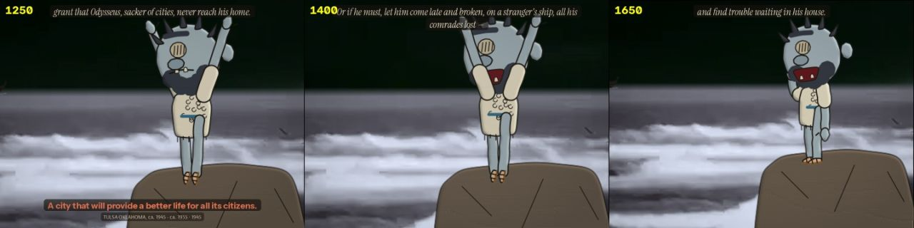
scene test Scene test, curse
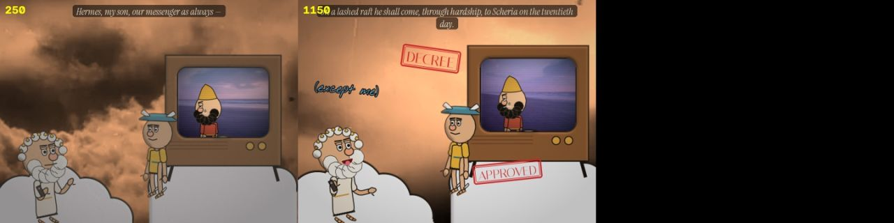
scene test Scene test, olympusThe fourth-wall devices
These are the tricks for talking to you directly. Like this.
- Two hands arguing in the margins. Gold notes are Odysseus's ("me.", "cowards.", "guests!", "HE ATE THEM.", "for my men."). Blue notes are Polyphemus's ("MY cave.", "a careful hand.", "thieves.", "dinner.", "MY EYE", "NOBODY did it!", "my ram.").
- Each hand crosses out the other's notes.
- The blue hand first appears in the cold open as an unexplained "sure."
- At the end the blue hand writes down the address Odysseus has just given away: "ODYSSEUS / son of Laertes / ITHACA". The gold hand adds "...oops."
- The archive shows its film. When an answer's own film is in the library, it plays in a framed inset for as long as the line lasts. This happens for 13 answers, including The Snow Queen, How Man Made Day, Your Movie Camera and How to Use It, Hi Diddle Diddle, Introduction to Firearms and Broadway Limited.
- Things that cross the seam change style, from black-figure to colour and back.
- Callback to Episode 1. On "Nobody is my name" he hops on the name again, and the gold hand writes "(see Ep. 1)".
Observed and generated
This part separates what came from the archive from what was made here.
Observed:
- Every spoken line is from the Found Odyssey CALL tracks for OD-B09-S01 to S11. The words and their order are unchanged.
- Only the selection of lines and the pauses between them were chosen (
ody/ep2/cut.py).
Footage:
- The plates and insets come from the cineosis-lab library (
lab/clips). - The insets are always the same film the line comes from, but not necessarily the same moment of that film.
- The clips the Found Odyssey itself picked are hosted on r2.dev and could not be reached.
Generated:
- all drawing and animation;
- the vase grade, the film burn and the sonsign trace;
- the ink notes;
- the sound effects and the music.
Character designs: Polyphemus is a new original design (one eye, unibrow, fleece, blue-grey skin), added to the same ink renderer as Odysseus.
Files
The code, if you want to open it.
The engine and scenes are in ody/ep2/:
eng.py: the engine;s_*.py: the scenes;props.py: the drawn props;furn.py: the title, cards, credits and assembly.
The rig worlds are in crash/m_e2*.js.
Review
This is where the blind reviews come in.
Nobody has reviewed the episode yet.